Tools and Plugins
This section describes the various extension plugins which are available for MicroView.
 ROI Manager
ROI Manager
This tool facilitates the use of multiple regions of interest (ROI) within MicroView. ROI are unmanaged until added to the ROI Manager. Once added to the ROI Manager, the originating plugin that created the ROI can move on to generate a new ROI, or in fact, can be closed without losing a reference to the ROI object. The ROI Manager can remember, display, activate, and apply Boolean operations to regions of interest.
Adding ROI
To have the ROI Manager remember the active ROI, click Add Current ROI and provide a name. The name you provided now appears in the ROI Objects list. The active ROI is now managed.
To save a ROI to disk, select a ROI from the ROI Objects list and click Save. The ROI Manager uses the VTK Image or vti format to store ROI on disk.
The ROI Manager supports loading of VTK Image files that are created using the save functionality above, as well as the file formats previously supported with the Geometry Manager tool, such as VTK. To load a ROI from disk, click Load and locate the appropriate file.
To delete a managed ROI, select the ROI from the ROI Objects list and click Delete. Click Delete All to remove all ROI from the list.
Displaying ROI
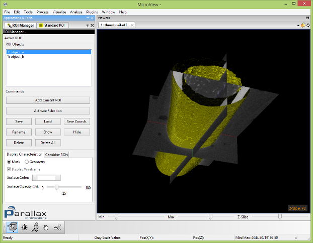
Displaying a ROI does not make a ROI active. That is, displayed ROI do not affect any of MicroView's plugins or the calculations that they perform. To activate a ROI, see the next section "Activating ROI".
To display a managed ROI, select a ROI in the ROI Objects list. Now click Show. You can display multiple ROI simultaneously. To remove the ROI from the display, click Hide.
You have several options to control the visual presentation of the ROI.
To view all displayed ROI as binary masks, choose the Mask option.
To view the displayed ROI as 3D objects, choose the "Geometry"
option.
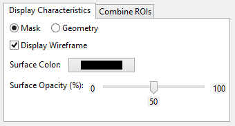
The Display Characteristics tab contains options that control the presentation of individual ROI. If you are using the "Geometry" display option, then select "Display Wireframe" to view a wireframe mesh of the ROI or de-select to view the ROI as a solid object.
The "Surface color" and "Surface Opacity" fields control the colour and translucency of the ROI respectively. When viewing ROI using the "Geometry" option, the colour and opacity of each ROI can be controlled independently. When viewing ROI using the "Mask" option, the colour of each ROI may be controlled independently, but the opacity affects all of the ROI currently viewed simultaneously.
Activating ROI
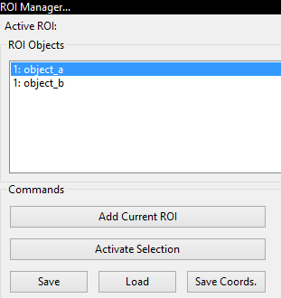
The active ROI affects MicroView's plugins. To activate a ROI, select its name in the ROI Objects list and click Activate. Only one ROI can be active. The "Active ROI" field at the top of the ROI manager displays the name of the active ROI. Creating a new ROI supplants the active ROI.
Applying Boolean Operations to ROI
You can apply Boolean operations to existing ROI to create new ROI. The figure illustrates the effects of the different Boolean operations: NOT inverts the ROI; OR combines two ROI; AND intersects two ROI; and XOR gives the ROIs' respective unique points.
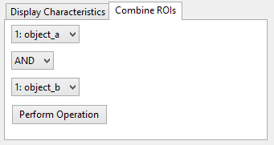
To apply a Boolean operation, open the Combine ROIs tab. Select the ROI and the operation you desire to perform. Note that NOT operates on a single ROI. Click Do Operation to execute the operation. The resulting ROI is added to the ROI Objects list.
Visualizing 3D Data
The ROI Manager's 3D display capabilities can be used to create
impressive graphical presentations of data. As an alternative to
MicroView's Volume Rendering plugin, you can display several ROI
simultaneously using the Geometry option. This is particularly
advantageous when using the Movie Maker plugin: rendering the ROI is
faster than the volume rendering.
Simple Analysis Tools
Point (1D)
At any time while the mouse cursor is over the volume, the coordinates
and gray-scale value will appear in the bottom left-hand corner of the
3D viewport. You can change between displaying coordinates in mm or
pixels, in MicroView's application settings dialog
(Edit → Application Settings...).
Line (2D)
A line segment can be selected for analysis by performing the following steps:
- Position the mouse cursor over an image in any of the viewports.
- Press the 1 key to mark the beginning of the line.
- Press the 2 key to mark the end of the line.
- or -
- Select
Edit→Show Lineto display a line in the center of the image immediately
Green and blue markers will be drawn in the 3D viewport, indicating the beginning and ending of the line, respectively. The marks can be dragged interactively about each viewport by selecting the marker using the middle button. Re-select the endpoints at any time by pressing either of the 1 and 2 keys. Clear the line by pressing the y key.
Once a line segmented has been selected, use any of the following hotkeys to perform a 2D analysis:
2D Keyboard Hotkeys
| HotKey | Result |
|---|---|
| a | Saves the end-points of the line tool, and gray-scale values measured along the selected line to a text file. |
| p | Plots the gray-scale values along the selected line. |
| y | Removes the line from the viewport. |
Volume (3D)
Select a 2D or 3D region of interest (ROI) using any of MicroView's ROI tools. Once a ROI is selected, use any of the following hotkeys to perform 2D/3D analysis:
3D Keyboard Hotkeys
| Hot Key | Result |
|---|---|
| c | Removes the active ROI from the screen. |
| g | Plots the histogram of the gray-scale values within the ROI. |
| m | Calculates the mean and standard deviation of the gray-scale values within the ROI. |
| s | Saves the boundary coordinates of the standard ROI to a file. |
| v | Saves the ROI to an image file. |
| d | Saves the gray-scale values to a text file. Selection region must be two dimensional. |
| u | Saves the area to an image file (2D ROI selection only). |
| Del | Sets voxel values, within the currently defined ROI to a user-defined value (defaults to zero). Use this key to mask out regions of an image. |
| Shift+Del | Sets voxel values, outside the currently defined ROI to a user-defined value (defaults to zero). Use this key combination to mask out everything outside a ROI. |
Line Profile Window
Overview

MicroView can plot a profile of pixel data along a user-defined line. First, select the start and end points of the line, then press the p key to plot the data profile.
Interacting with the Plot Window
Use the left mouse button to interactively click and drag a region of
interest in order to zoom in on the plotted data. Multiple levels of
zooming can be achieved by repeating the click-and-drag method. Zoom out
by clicking with the right mouse button. Reset the plot window by
clicking the Reset button at the bottom of the plot window, selecting
View → Reset, or by pressing the r key.
Optionally display symbols over each data point, by selecting
View → Symbols.
Measurements along the 2D pixel profile may be made by positioning the mouse cursor over a feature within the plot window and pressing the 1 key, then selecting a second feature and pressing the 2 key. A horizontal red line will be drawn between the two features. Once drawn, the endpoints can be moved, either by using the 1/2 key combination, or by adjusting the endpoint values in the editable text fields below the plot area. Mouse cursor position and selected line length are displayed in the bottom center of the plot window. This feature is particularly useful for measuring full-width half-max (FWHM) distances on peaks in a unbiased, systematic fashion.
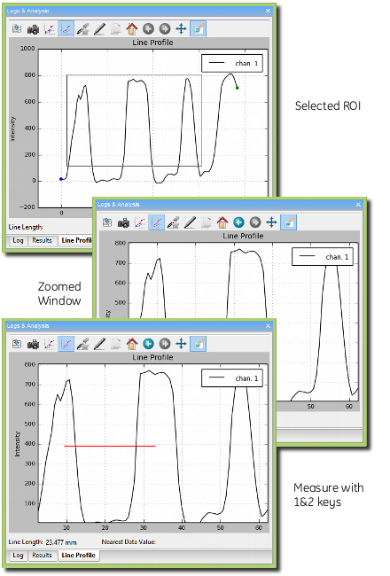
Saving data
The plot window data can be exported to disk in one of two ways:
Select File→Save Data...to save the line profile to disk in a simple text formatSelect File→Save Snapshot...to save a screen capture of the plot window to one of a number of common image file formats
 Histogram Window
Histogram Window

MicroView can plot a histogram of pixel values within a 2D or 3D ROI. To plot a histogram of data, first select a ROI, then press the g key to activate the histogram window. The control of the histogram window is similar to the control of the 2D profile plot window.
The histogram window has the following additional features:
- The Auto Threshold button can be used to automatically determine an optimal threshold value for use in the isosurface tool or Advanced Bone Analysis application. The value will be selected using the method of Otsu. A red arrow will be displayed on the x-axis of the plot after hitting this button, indicating the threshold value. In addition, the window/level settings in MicroView will be adjusted to reflect this threshold value, as a convenience.
- The user can selectively interrogate a range of data within the
histogram. For this selected range of values, the total number of
voxels in the selected range and corresponding volume fraction are
reported. To select a range of voxel values, place the cursor on the
graph in the plot window and press the middle mouse button. Drag the
mouse and release the button once the desired range of voxel values
have been highlighted, in red. Check the
Highlight selected regioncheckbox to adjust the image display in the 3D and all 2D viewports of the main window, so that voxels corresponding to the selected value range will be highlighted. - Selected ranges can be converted to an active ROI by first
highlighting a region, as described above, then clicking the
Highlight→ROI button. The highlighted red region will become yellow, indicating that the selected values are now the active ROI. - The user can select different bin sizes for the histogram. Select
from one of the menu entries under
Options→Bin Sizeto adjust the bin size.
Advanced Bone Analysis Application
Overview
MicroView's Advanced Bone Analysis Application performs a variety of analysis and visualization tasks upon a selected region of interest within an image. The application is designed specifically for analysis of CT images of bone. The choice of which functions to perform on a given ROI, what type of visualization output to use, and how the current project or study should be structured can be selected prior to any calculation. It is possible to export the results to any or all of the following formats: plain text, CSV, Excel, or PDF.
The Advanced Bone Analysis Application contains the following analysis tools:
- BMD, which reports the bone mineral density (BMD), bone volume fraction (BVF), bone mineral content, and various other statistics;
- SMI, which reports the structure model index (SMI). SMI gives information about the curvature of the surface, and estimates how "plate-like" or "rod-like" a trabecular structure is;
- Anisotropy, which determines the degree of symmetry and orientation of a trabecular structure;
- Stereology, which reports Euler index, bone volume fraction, bone surface to bone volume ratio, trabecular plate thickness, trabecular plate number, trabecular plate separation and various other measures. The Euler index is a measure of the connectivity of a trabecular structure;
- Topology, which categorizes each voxel in a trabecular structure as being a member of either a surface, curve, or junction and provides a visual representation of this classification;
-
Direct Measures, which determines the local trabecular thickness of a bone, and provides a visual representation of this local thickness, and;
-
Cortical Bone Analysis, which determines slice-by-slice thickness, area, moment of inertia, and BMD values for cortical bone. It is to be used in conjunction with the Cortical ROI tool to perform analysis on the cortical shell of a bone.
Using the Advanced Bone Analysis Application

- Activate the Advanced Bone Analysis Application by selecting
Analyze→Bone Analysis...from MicroView's menu, or by clicking on the Bone Analysis button in the Applications group of MicroView's toolbar. - If an ROI has not already been selected, first activate an ROI plugin and select a ROI. As a convenience, the list of available ROI plugins is displayed in the choice-box in the upper left of the plugin: Choose an ROI tool in the available drop-down list, then hit the Activate ROI button to launch the tool.
- Once a ROI has been selected, enter a gray-level threshold value, that will be used to discriminate bone from non-bone voxels in the image. Either type in a threshold value in the entry field in the Threshold section or click the Auto Threshold button, to determine a best-guess threshold value automatically. If you would like to verify that the automatically selected value is appropriate, generate a histogram of the image contained within the ROI, then hit the Auto Threshold button on the histogram plot window.
- In the Bone Parameters section select the type of analysis desired. Click the Advanced Options... button to modify the default settings. The Advanced options will be discussed in more detail later in this section.
- In the Output Options section select the name of the file where the results will be stored. The results are written to an XML database file. These results are presented for review in a custom spreadsheet view. This spreadsheet view allows the results to be exported to one of the supported file formats (text, CSV, Excel, PDF). If no project file name is provided, the analysis cannot be performed. It is also possible to select an existing database file using the Load Project button. The new results can then be added to this database. More information regarding the project database can be found here.
- In the Visualization Options select RAW, Topology, Anisotropy, or Direct Measures. The options Topology, Anisotropy and Direct Measures will only be available for selection if they have been selected in the Cancellous Bone Parameters section. If one of these three options is selected, MicroView will shift focus from the Advanced Analysis dialog to the appropriate dialog for visualization when the Run button is clicked.
- Click the Run button.
Advanced Options
The Advanced Options allows the user to modify the default settings. To display the Advanced Options dialog click the Advanced Options button. In the Advanced Options dialog there are several tabs:
- The BMD tab has several variables that can be edited manually. By default the values for Bone ADU (arbitrary density unit) and Water ADU are set to the calibration constants found in the header of image file. The Lower Exclusion ADU is a gray scale value below which voxels are not included in the bone equivalent mass calculation. Similarly the Upper Exclusion ADU is a Gray scale value above which voxels are not included in the bone equivalent mass calculation. The upper and lower exclusion ADU should be set to exclude air and metal, respectively, in the bone mass calculation.
- The SMI tab has options to smooth the image prior to the generation of an isosurface and to smooth the isosurface prior to the calculation of SMI.
- In the Anisotropy tab, the Grid Spacing determines how finely the ROI is to be resampled prior to any calculations, the Number of Tests determines the number of lines to use when calculating mean intercept length (MIL), and Random Testing Angles determines whether the direction of the lines used when calculating MIL are randomly chosen.
- In the Direct Measures tab, the user has an option of what measures to compute direct trabecular thickness, direct trabecular spacing, or both. The Minimum Feature Size in pixels can also be specified. Structures less than this size will not be used in calculating direct trabecular thickness and direct trabecular spacing.
- The Stereology tab, has an option to enable verbose output to display additional measures, and an option to enable the purify algorithm. To obtain meaningful results from Stereology, the image should be passed through this purification filter first. The purify algorithm removes spurious unconnected region.
- After all the modifications to the Advanced Options have been made, click the OK button to close the dialog.
Specific Tool Information
Bone Composition Measurement Tool

This tool performs a virtual biopsy and "ashing" to determine bone mineral content non-destructively. Image data derived from the Locus family of CT scanners may be calibrated to standard CT number, measured in Hounsfield Units (HU), and furthermore calibrated to permit determination of equivalent mass of hydroxyappetite. Results are reported as bone mineral fraction (BVF) or bone mineral density (BMD) in units of mg (HyAp)/cm3. To use this tool, launch the Advanced Bone Analysis application, define a 3D ROI, then select a threshold that discriminates bone from soft tissue. Prior to hitting the Run button, if required, click the Advanced Options... button to modify the BMD tool settings:
- Enter a value for
Bone ADU - Enter a value for
Water ADU - Enter a value for
Lower Exclusion ADU - Enter a value for
Upper Exclusion ADU
SMI Tool

Structure model index (SMI) is a parameter used to measure how "rod-like" or "plate-like" trabecular architecture is. With aging and disease, cancellous bone architecture in some sites deteriorates from plate-like to rod-like. SMI for ideal plates and rods is 0 and 3, respectively. SMI calculated for specimens with high bone volume fraction (BV/TV) can be negative.
Outputs
- SMI (unitless) - the SMI parameter
- Volume - the volume within the isosurface
- S.A. - the surface area of the isosurface
- Delta_R - distance along the normal direction each vertex is translated to estimate SA_Prime
- SA_Prime - surface area derivative
Algorithm
The SMI parameter is discussed in detail in Hillebrand97a. SMI is calculated as
where S' is the surface area derivative, V is the trabecular bone volume, and S is the surface area. The factor of 6 is used to obtain integer values for ideal plate, cylinder, and sphere models (plate = 0, cylinder = 3, sphere = 4).
The first step in calculating SMI is to create an isosurface of the trabecular bone within the ROI. The surface area and volume are directly calculated from this isosurface. The surface area derivative is estimated by calculating the change in surface area of the isosurface when the vertices are translated a small amount along their normal directions and normalizing by the magnitude of the displacement.
Note
SMI was initially used to describe structures with very few intersections between the structure elements (i.e., rods and plates) while the BV/TV is low. SMI parameter is always positive for these structures. However, if SMI analysis is applied on a dense structure with lots of intersections between the structure elements, it may give negative SMI values. This results from the surface area decreasing when dilating the surface vertices along the normals and consequently a negative S' in the equation for SMI. For example, take a plate with a hole in the center. The hole becomes smaller after the vertices are translated in the normal direction and the corresponding change in surface area is negative.
Note
For a ROI with more than 27 000 000 (300x300x300) voxels, the ROI image is resampled by shrinking factors 2 by 2 by 2 to reduce memory consumption and speed up the calculation.
Advanced Options
- Smooth Isosurface (default value: ON) - uses a windowed sinc function as interpolation kernel to 'relax' the mesh, making the cells better shaped and the vertices more evenly distributed. The windowed sinc function is a low-pass filter that eliminates the high frequency noise and keeps the low frequency features of bone surfaces.
- Smooth Raw Image (default value: OFF) - passes data through a Gaussian filter prior to creating isosurface. The default kernel size is 3x3x3 and default standard deviation is 1. The user can set these parameters in the advanced options.
Anisotropy Tool

Anisotropy measures the orientation of the trabecular architecture. This orientation affects the mechanical behavior of trabecular tissue and is affected by age and disease. MicroView uses the mean intercept length (MIL) method to calculate the structural anisotropy. This method measures the intersections of a test grid with the trabecular structure and calculates the fabric ellipsoid (3D ellipse). Trabecular structures with no preferred orientation have a spherical ellipsoid, while structures with more alignment in one direction have the major axis of the ellipse aligned in that direction.
Output
- Ellipsoid Coefficient
- Eigenvector, value and principle MILs
- Ratios: a1/a3, a1/a2, a2/a3
Algorithm
A grid of parallel test lines is passed though the ROI and the number of intersections of the test lines with the bone/marrow interface is calculated. This procedure is performed for the number of test rotations listed in the advanced options. Each rotation of the test grid is described by two angles (theta, phi) in spherical coordinates. For each rotation, MIL is calculated as 2* BV/TV / (number of intersections / test line length). The MIL data are then fit to the equation of an ellipse using least squares. The least squares analysis provides the 6 coefficients for the best fit ellipse. An eigen analysis of the second rank tensor formed by these coefficients provides the length of the axes of the ellipsoid and their corresponding directions. The degree of anisotropy is then defined as the ratio of the lengths of the maximum and minimum axes.
Advanced Options
- Random Test Angles (default: ON) - when checked, the test grid is rotated through pseudo-random angles; otherwise the test grid is rotated step by step in theta and phi with a constant stride.
- Number of Rotations (default: 200) - number of rotations of the test grid
- Grid Spacing (default: 3) - spacing (in voxels) between test lines
Stereology Tool
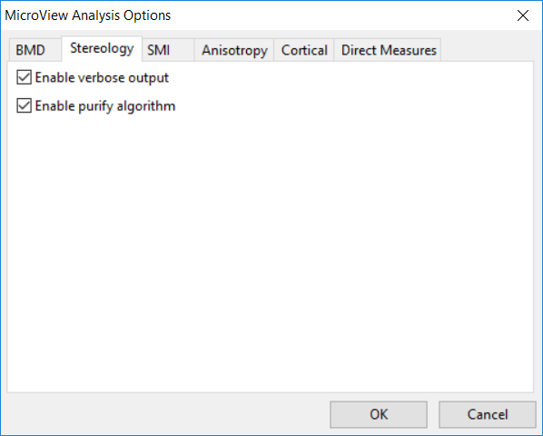
MicroView can perform a simple stereology analysis of a 3D bone image. The stereology tool measures trabecular structure using similar techniques to those implemented in classical histomorphometry. 2D techniques determine estimates of trabecular thickness, spacing and density. At the same time, trabecular connectivity is quantified by calculating the Euler number for the trabecular structure. Finally, the bone surface area to volume ratio is also calculated.
To perform a stereology analysis on a CT image of a bone, launch the Advanced Bone Analysis application, define a 3D ROI, then select a threshold that discriminates bone from soft tissue. Prior to hitting the Run, if required, click the Advanced button to modify the Stereology tool settings:
Advanced Options
- Turning on
Enable verbose outputwill generate additional output measures. - Turn on the
Enable purify algorithm for Euler No. calculationoption to pass the selected image through a purification algorithm, first, before computing the Euler number. The purify algorithm removes isolated bony spicules and fills encapsulated marrow spaces. !!! Note When the purify algorithm is enabled, select a ROI where at least one of the voxels at the boundary of the ROI is equal to or above the threshold (ie. the trabecular bone must intersect the boundaries of the ROI). Passing a clipped image, through the purify filter, which has no boundary voxels equal to or above the threshold will produce a blank image from the filter. - Turn on the
Enable purify algorithm for all other calculationsoption to pass the selected image through a purification algorithm, first, before performing the other calculations.
Topology Plugin
Topology
Warning
This plugin may not be available in all versions of MicroView. This plugin can be used to determine a 3D topology of each voxel in a trabecular bone structure.
- Define a 3D ROI by using either the 7/8 keys,or by
selecting a ROI using the ROI plugin
(
Plugins→ROI Selection Tool...on the MicroView menu). - Once a ROI has been defined, activate the Topology plugin by
selecting
Topology...from thePluginsmenu. - Enter the desired file name in the
Output Filetext window. - Click the Calculate button to generate a topological image within
the selected ROI and create a report (see
Output File). - Click the Show Overlay or Hide Overlay button to show or hide the topological image.
- Once the topological image is overlaid on the original image, the
transparency of topological image can be adjusted by the checkboxes
and sliders. The voxels of the topological image are classified as
follows:
DENS- topological skeletonCE- curve edgeSE- surface edgeC- curve interiorS- surface interiorCC- curve-curve junctionSC- surface-curveSS- surface-surfacePE- profile-edgePI- profile interior
Direct Measures Tool
Direct Measures

Direct Measures calculates the trabecular thickness (Tb.Th) and separation (Tb.Sp) by fitting maximal spheres to the trabecular structure. The diameters of the spheres within the bone and marrow regions provide estimates of Tb.Th and Tb.Sp, respectively.
Output
- Tb.Th - mean trabecular thickness
- Tb.Sp - mean trabecular separation
- Histogram of voxels within spheres of incremental sizes determined in the Advanced Options
Algorithm
The algorithm is discussed in detail in. The first step is to binarize the data based on the selected threshold. For trabecular thickness, the Euclidean Distance Transform of the bone region is calculated. This results in each bone voxel being assigned a value corresponding to the distance to the nearest non-bone voxel. Next, for each bone voxel the largest sphere that fits within the bone structure is determined. Tb.Th and Tb.Sp are then calculated as the mean value assigned to all bone and marrow voxels, respectively.
Advanced Options
- Min Feature Size - determines the minimum diameter sphere used when calculating the mean value for Tb.Th and Tb.Sp.
- Histogram Bin Size - sets the bin width for the Tb.Th and Tb.Sp histograms
- What to measure? - sets which parameters are measured
- Direct Trabecular Thickness
- Direct Trabecular Separation
- Direct Tb.Th and Tb.Sp
Note
There is a limitation for ROI dimensions, which is 650x650x650. The accuracy of the Tb.Th and Tb.Sp calculation is 0.01 voxel.
Cortical Analysis Tool
Cortical Analysis

Cortical analysis is designed to be applied to the cortical shell of a bone such as a femur or humerus. The algorithm measures a wide number of different parameters of utility.
Note
The cortical analysis tool assumes that the bone is aligned with the long axis parallel to the z-axis defined in MicroView. If your sample is not oriented in this way, it must be reoriented for the results to be meaningful.
Output
By default, the output values are reported for the entire ROI. Using an advanced option, it is possible to have the values reported on a slice-by-slice basis.
- Angle X - the angle between the x-axis of the ROI and the original x-axis (not available in slice-by-slice data)
- Angle Y - the angle between the y-axis of the ROI and the original y-axis (not available in slice-by-slice data)
- Angle Z - the angle between the z-axis of the ROI and the original z-axis (not available in slice-by-slice data)
- Number of Slices - number of slices in the ROI (not available in slice-by-slice data)
- Mean Thickness - the average thickness of the cortical bone
- Std Dev Thickness - the standard deviation of the thickness of the cortical bone
- Ixx - the moment about the x-axis of the cortical bone
- Iyy - the moment about the y-axis of the cortical bone
- Izz - the moment about the z-axis of the cortical bone
- Ixy - the bending xy moment of the cortical bone
- Inner Perimeter - the inner perimeter of the cortical bone
- Outer Perimeter - the outer perimeter of the cortical bone
- Marrow Area - the area contained inside the cortical bone
- Cortical Area - the area of the cortical bone only
- Total Area - the total cross-sectional area of the bone
- BMD - Bone mineral density
- BMC - Bone mineral content
- Centroid - the position of the centroid of the volume
Algorithm
The first parameters computed are the moments and the centroid location. Once the centroid location has been determined, rays are projected from this location towards the edge of the ROI. When the ray first intersects the edge of the cortical bone, this point is noted as an interior point. When the ray intersects the second edge of the cortical bone, this is noted as an exterior point. The lists of interior and exterior points are then used for thickness, perimeter and area computations.
Advanced Options
- Report individual slice data - turns on reporting of all output measures listed above but on a slice-by-slice basis rather than for the entire volume
- Report radial thickness data - turns on reporting of cortical thickness measurements at ten degree intervals around the circumference of each slice
- Perform mass normalization of moments - normalizes all of the moment measures by the total mass of cortical bone
 Basic Bone Analysis Application
Basic Bone Analysis Application
Overview
MicroView's Basic Bone Analysis Application performs a variety of analysis upon a selected region of interest within an image. The application is designed specifically for analysis of CT images of bone. The choice of which functions to perform on a given ROI, can be selected prior to any calculation. The results could be stored or appended in user specified plain text files.
The Basic Bone Analysis Application contains the following analysis tools:
- BMD, which reports the bone mineral density (BMD), bone volume fraction (BVF), bone mineral content, and various other statistics;
- Stereology, which reports Euler index, bone volume fraction, bone surface to bone volume ratio, trabecular plate thickness, trabecular plate number, trabecular plate separation and various other measures. The Euler index is a measure of the connectivity of a trabecular structure.
Tip
The commercial package Advanced Bone Analysis Application contains analysis tools for SMI, Anisotropy, and Stereology. It also offers project and study management tools and support PDF and Excel outputs.
Using the Basic Bone Analysis Application

- Activate the Basic Bone Analysis Application by selecting
Analyze→Bone Analysis...from MicroView's menu, or by clicking on the Bone Analysis button in the Applications group of MicroView's toolbar. - If an ROI has not already been selected, first activate an ROI plugin and select a ROI. As a convenience, the list of available ROI plugins is displayed in the choice-box in the upper left of the plugin: Choose an ROI tool in the available drop-down list, then hit the Activate button to launch the tool.
- Once a ROI has been selected, enter a gray-level threshold value, that will be used to discriminate bone from none-bone voxels in the image. Either type in a threshold value in the entry field in the Threshold section or click the Auto Threshold button, to determine a best-guess threshold value automatically. If you would like to verify that the automatically selected value is appropriate, generate a histogram of the image contained within the ROI, then hit the Auto Threshold button on the histogram plot window.
- In the Bone Parameters section select the type of analysis desired. Click the Advanced Options... button to modify the default settings. The Advanced options will be discussed in more detail later in this section.
- In the Output File section select the name of the file where the results will be stored. The results are written to a plain text file. These results are presented for review after each successful execution. It is also possible to append the results to an existing text file by checking the Append checkbox button.
- Click the Run button to perform the analysis.
Advanced Options
The Advanced Options allows the user to modify the default settings. To display the Advanced Options dialog click the Advanced Options... button. In the Advanced Options dialog there are several tabs:
- The BMD tab has several variables that can be edited manually. By default the values for Bone ADU (arbitrary density unit) and Water ADU are set to the calibration constants found in the header of the currently loaded image file (not all file types support this). The Lower Exclusion ADU is a gray scale value below which voxels are not included in the bone equivalent mass calculation. Similarly the Upper Exclusion ADU is a Gray scale value above which voxels are not included in the bone equivalent mass calculation. The upper and lower exclusion ADU should be set to exclude air and metal, respectively, in the bone mass calculation.
- The Stereology tab, has an option to enable verbose output to display additional measures, and an option to enable the purify algorithm. To obtain meaningful results from Stereology, the image should be passed through this purification filter first. The purify algorithm removes spurious unconnected region.
- After all the modifications to the Advanced Options have been made, click the OK button to close the dialog.
Specific Tool Information
Bone Composition Measurement Tool
Bone Composition

This tool performs a virtual biopsy and "ashing" to determine bone mineral content non-destructively. Image data derived from the Locus family of CT scanners may be calibrated to standard CT number, measured in Hounsfield Units (HU), and furthermore calibrated to permit determination of equivalent mass of hydroxyappetite. Results are reported as bone mineral fraction (BVF) or bone mineral density (BMD) in units of mg (HyAp)/cm3. To use this tool, launch the Advanced Bone Analysis application, define a 3D ROI, then select a threshold that discriminates bone from soft tissue. Prior to hitting the Run button, if required, click the Advanced Options... button to modify the BMD tool settings:
- Enter a value for
Bone ADU - Enter a value for
Water ADU - Enter a value for
Lower Exclusion ADU - Enter a value for
Upper Exclusion ADU
Stereology Tool
Stereology
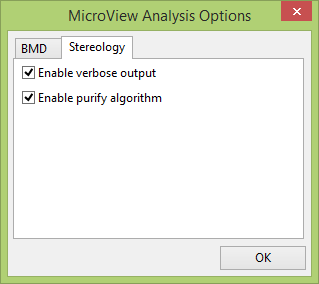
MicroView can perform a simple stereology analysis of a 3D bone image. The stereology tool measures trabecular structure using similar techniques to those implemented in classical histomorphometry. 2D techniques determine estimates of trabecular thickness, spacing and density. At the same time, trabecular connectivity is quantified by calculating the Euler number for the trabecular structure. Finally, the bone surface area to volume ratio is also calculated.
To perform a stereology analysis on a CT image of a bone, launch the Advanced Bone Analysis application, define a 3D ROI, then select a threshold that discriminates bone from soft tissue. Prior to hitting the Run, if required, click the Advanced button to modify the Stereology tool settings:
- Optionally click on the
Enable Purifyoption to pass the selected image through a purification algorithm, first, before performing the stereology analysis. The purify algorithm removes isolated bony spicules and fills encapsulated marrow spaces. Note: When the purify algorithm is enabled, select a ROI where at least one of the voxels at the boundary of the ROI is equal to or above the threshold (ie. the trabecular bone must intersect the boundaries of the ROI). Passing a clipped image, through the purify filter, which has no boundary voxels equal to or above the threshold will produce a blank image by the filter. - Optionally uncheck the Enable verbose output to disable the verbose output.
Image Registration and Fusion Application
Image Registration
Overview
Image registration is the process of finding a spatial transform that co-aligns two images, such that homologous features in both images (i.e. identical landmarks in the two distinct images) are given the same spatial coordinate. This is commonly performed so that the two images may be displayed superimposed together (i.e. fused) in a fashion that makes corresponding features easily viewed and identified. MicroView's register tool is designed for manual landmark registration. Manual landmark registration involves picking two sets of homologous landmarks from so-called "fixed" and "moving" images. A simple sum of least squares fitting algorithm is then used to determine the transformation to map the moving image to the coordinate system of the fixed image based on the landmarks selected.
There is an option in this registration tool that allows the user to select the type of transform to be performed. The options are rigid body, similarity, and full affine transformations.
Once images are registered they can be visualized through synchronization and/or fusion. For example, an image gathered from a positron emission tomography (PET) scanner provides functional information whereas an image obtained from a computed tomography (CT) scanner provides information regarding the structure and anatomy of the specimen. Synchronization and fusion will correlate the structural and functional information.
Using the Register Tool
Activate the Register Tool by selecting Plugins → Register... from
MicroView's menu or by clicking on the Register button in the
Applications group of MicroView's toolbar. The registration process is
divided into the following 3 main steps:
- Loading Images and Layout Setup
- Landmark Registration
- Visualization
Notice that a toggle button appears beside the window/level slides when the Register Tool is activated.
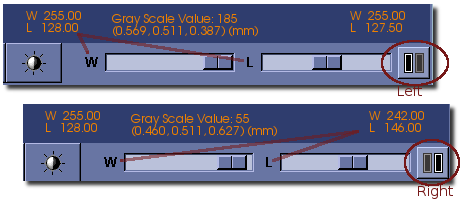
Click on the button to toggle the control of the window/level slides to the left and right images.
Loading Images and Layout Setup
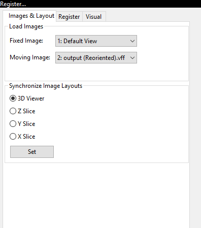
- Click the
Images and Layouttab to activate this page. - Click the Fixed Image (Left) button and select the fixed image when
the
Opendialog appears. The fixed image is also called the target image. It is displayed on the left side. - Click the Moving Image (Right) button and select the moving image
when the
Opendialog appears. The moving image is also called the source image. It is displayed on the right side. - Select the views desired in the
Layoutssection and click the Set button. The view settings can be changed at any time during the registration process.
Landmark Registration
Landmarks
Click on the Register tab to activate this page.
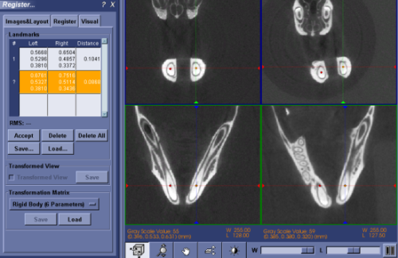
Following are the typical steps to do landmark registrations:
- To select landmarks on images, position the cursor over a landmark
in either image and then press the Space on the keyboard. Do
the same to the other image to find the corresponding landmark. The
selected pair of landmarks are shown as orange marks. At the same
time, the coordinates of the landmarks are displayed in a row in the
table on the left panel, which is highlighted in orange color and
begins with a
?mark. These two landmarks can be moved around by moving the mouse to new positions and then pressing the Space. Zoom in on the images if required to fine-tune the locations of the landmarks. Sometimes, it may be easier to locate the corresponding landmarks in a oblique view. Use the 3D view to manipulate the image and get oblique views. - To record the pair of landmarks that are selected in previous step, click the Accept button, or press the Enter key. This pair of landmarks will be displayed as red marks to indicate that they are accepted and recorded. The recorded landmarks may not be moved around. However, they can be deleted and replaced by a new pair.
- Repeat the above two steps to find more pairs of landmarks. There is no upper limit for the number of landmarks that may be selected. However, a minimum of 3 pairs of landmarks must be selected for 2D images and at least 4 pairs of landmarks must be selected for 3D images. Once enough landmarks have been selected a transformation matrix is automatically calculated to register the moving image on left to the fixed image on the right. The initially disabled Transformed View check box becomes enabled.
- Check the Transformed View check box to switch the moving image to the transformed view. At this stage, it may be sufficient to skip to the visualization section and examine the registration result. If the result is not satisfactory, continue on to the following steps.
- Select more landmarks to improve the registration. The additional
landmarks on the moving image could be picked either in its original
view or the transformed view. Switch back and forth between original
and transformed views by checking and unchecking the Transformed
View check box. Notice the contents of the second (landmark
coordinates on the right) and third (distance) columns also change
when the view is changed. Examining the distance column in the
transformed view could help one to find the pair of landmarks that
contribute the largest RMS error for the registration. The RMS value
is the root mean square of the distances between each landmark
pairs. This value is displayed under the
Landmarkstable. - Landmarks can be reviewed and/or deleted by selecting the
corresponding row in the
Landmarkstable. Click the left mouse button on a row to highlight it. Click the Delete button to delete the highlighted row and the corresponding landmarks on the images. All of the landmarks can be deleted at once by clicking the Delete All button. -
By default, the rigid-body transform is used for the registration. If the rigid-body transform is not sufficient for the registration, switch to another type of transform by changing the drop-down selection from the
Transformation Matrixsection:Rigid Body (6 Parameters)is a type of transformation with 6 degrees of freedom (ie. 3 for rotation and 3 for translation).-
Similarity (7 Parameters)is a type of transformation with 7 degrees of freedom (ie. 3 for rotation, 3 for translation, and 1 for uniform scale). -
Full Affine (12 Parameters)is a transformation with 12 degrees of freedom (ie. 3 for rotation, 3 for translation, 3 for scale, and 3 for shear).
Note that the more parameters the transformation matrix uses, the more landmarks are needed to get a good result.
-
Landmarks may be added or removed after switching the transformation type. Once done, go to the
Visualizationpage to review the registration result. When satisfied, the results can be saved in one, two or all of the following three ways:- Landmark tags: save the landmark coordinates by clicking the
Save... button in the
Landmarkssection of the dialog. The landmarks can be loaded at a later time by clicking the Load... button in theLandmarkssection. - Resampled image: save the transformed (i.e., registered) moving
image on the right pane to a file by clicking the Save... button
in the
Transformed Viewsection. Tri-cubic interpolation is used to resample the transformed image. - Transformation matrix: save the transformation matrix by
clicking the Save... button in the
Transformation Matrixsection. This saved transformation can be applied at a later time to the moving image by clicking the Load... button in theTransformation Matrixsection.
- Landmark tags: save the landmark coordinates by clicking the
Save... button in the
Visualization
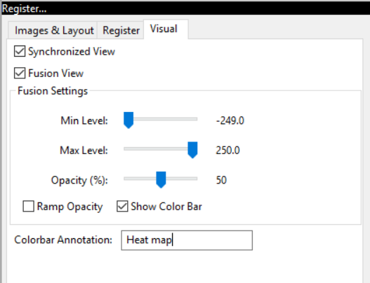
Click on the Visual tab to activate this page.
The visualization tools in this application serve two purposes. One is to visually evaluate the registration result and the other is to help user to correlate the information from the two images, e.g., the structural and functional information.
Synchronized View
Checking the Synchronized View check box synchronizes the two displayed images. The synchronized interactions on the images include:
- Gray scale values for both images are displayed when moving the cursor.
- Synchronized viewing angle.
- Synchronized zooming and panning.
- Synchronized slicing through the images (including Page-Up and Page-Down).
- Synchronized landmarks. Moving the cursor over a point of interest in either the fixed or moving images and then pressing the Space on the keyboard will activate the pair of orange colored landmarks. This feature can be used to do point-by-point comparison for the two registered images.
Tip
Remember to uncheck the Synchronized View check box before going back to the landmark page and selecting additional landmarks.
Fusion
Fusion
The moving image can be fused on to the fixed image by checking the Fusion View check box. Once the Fusion View check box is checked, additional controls will appear in the dialog.
- The
Min LevelandMax Levelsliders determine the range of gray scale values that get mapped to colors. The moving image will be transparent outside this range. - If the
Ramp Opacityoption is checked then the opacity of the moving image is ramped exponentially. Otherwise the opacity is constant and is determined by theOpacityslider. - There are several different color tables to select from. A color table is a mapping of gray scale values to RGB color values.
Tip
Synchronized view and fused views are designed to be used for two registered images, or at least two spatially overlapped images in the world-coordinates (the patient space). Trying to synchronize or fuse two spatially unrelated images will result in unexpected behaviors.
 Volume Rendering Tool
Volume Rendering Tool
Volume Rendering
Overview
Note
MicroView 2.5.0 features GPU-acceleration and improved level of detail rendering for most volume rendering functions.
MicroView's volume rendering tool can be used to produce stunning photo-realistic 2D semi-transparent representations of 3D image data by one of three raycast techniques. Raycast volume rendering is especially common in the medical imaging community where three dimensional volume data is easily available. To understand raycasting, think of voxels within a 3D image as possessing a density which corresponds to the graylevel value of the voxel. Imagine that for each pixel in the rendered image scene, a ray is drawn from the observer's eye, through the image pixel, then through the entire 3D image data set. Each ray will intersect a number of voxels before leaving the 3D image data. For each image pixel in the rendered scene, a color is determined by accumulating information derived from the intersecting voxels along the corresponding raycast ray. In particular, for each voxel in the 3D image data, the "density" or graylevel value of the voxel will be transformed into a corresponding voxel color and transparency. This color and transparency information will be combined, according to a raycast function to determine the final pixel color in the image scene.
MicroView currently supports three styles of raycast volume rendering:
- Isosurface Rendering - a raycast method where surfaces of similar density objects are rendered, and the remaining materials are hidden. For this rendering mode, a density threshold value must be selected that defines the surface, and the color of the surface selected.
- Maximum Intensity Rendering - a method where the color of the densest object along each raycast path is used to determine the final color of each pixel. This method is particularly useful to extract, e.g. contrast-enhanced vessels, or bone from images.
- Composite Rendering - a general raycast method, which gives the greatest level of control over the raycast scene.
MicroView's Rendering Interface

MicroView's volume rendering interface allows the user to control the type of rendering to generate and the parameters that will be used to generate the rendering.
The interface consists of the following elements.
- A graphical view that presents the image histogram, the opacity and color ramp and a representation of the LUT. The view can be controlled in the same fashion as the histogram or 2D profile plot windows. Additionally, this view contains a number of control points connected by a line. These control points are represented by either a blue (inactive) or red (active) dot and can be manipulated as outlined below.
- Control Point Settings group. These controls allow the user to fine tune the specific values that are used for each control point in the opacity and color ramp.
- A drop down box that contains a number of rendering presets. These
presets have been designed to produce a good quality rendering in
specific circumstances. There are two presents currently.
- Bone - sets the threshold at the Bone HU value specified in the volume.
- Soft tissue/Bone - uses the composite rendering method to generate an image that will accurately represent both soft tissues and bones. The preset values have been chosen using the calibrated HU values for bone and soft tissues.
- A pair of drop down boxes that are used to select the rendering mode to use, and the quality of the rendering to generate. The low quality rendering can be used to rapidly evaluate whether the chosen parameters will generate the desired image or not as the rendering is produced much more rapidly. Once the parameters have been roughly determined, the high quality rendering can be used to fine tune the results.
-
A group of buttons that provide the following functionality:
- Save - saves all of the parameter settings to file for use at a later time or on another system.
- Load - loads the parameter settings from a file generated using the Save function above.
-
Reset - Resets the histogram view and all of the associated parameters to the default values for the selected rendering function.
- Isosurface - the threshold value is set in the middle of the grayscale range of the volume.
- Maximum Intensity Projection - three regions equally spaced in the grayscale range of the volume. The first region covers the smallest values and has an opacity of 0. The second region covers the middle third of the values and is a ramp from an opacity of 0 to an opacity of 1. The final region covers the highest values and has an opacity of 1.
- Composite - a ramp starting from the smallest grayscale value in the volume and an opacity of 0 to the largest grayscale value in the volume and an opacity of 1. There is a third control point at the middle grayscale value.
The interface is reset whenever a new image is loaded into MicroView.
-
Update: generate the volume rendering using the current settings. Manipulating the volume (rotation, slicing, magnification) has the same effect.
Using the Volume Renderer Tool
- Select
Visualize→Render Volume...from the MicroView menu to open the volume rendering tool window. - Select the style of volume rendering desired. Composite rendering offers the greatest control over the display, but is the slowest form of rendering. MIP rendering displays a maximum intensity projection of the currently loaded image data. Isosurface rendering displays only the surface of objects, and is most useful for rendering bone images.
- Change the location of the controls points if desired, to achieve
the appropriate rendering result. The control points are chosen
using the left mouse button and will change from blue to red to
indicate that they are active.
- Isosurface - there are two control points that are vertically connected. These control points represent a threshold. All of the values above the threshold will be rendered. The two control points are always at the same graylevel.
- Maximum Intensity Projection - there are four control points, of which two can be manipulated by changing the graylevel value where they are located. The opacity values are fixed for all of the control points. The two end points are fixed. The first end point is at the lowest graylevel value in the volume and has an opacity of 0. The second end point is at the highest graylevel value in the volume and has an opacity of 1. The two control points in the middle of the histogram can be moved back and forth to change their graylevel position, and thus the location and slope of the ramp function.
- Composite - the composite rendering function is the most
complicated and begins with three control points (two end points
and the mid-point) and a ramp function from an opacity of 0 to
an opacity of 1 as outlined above. The end points are fixed at
the appropriate graylevel positions, but can have their opacity
changed. There are a number of different manipulations that can
be performed on the control points.
- Adding a control point - move the mouse pointer over the line that does not have an existing control point and click the left mouse button. A new point will appear at that location and will be active as indicated by the red coloration.
- Deleting a control point - select any existing control point by clicking on it with the left mouse button. The point will be marked active using the red coloration. Delete the point by pressing the "Del" key on your keyboard.
- Changing the opacity - select any existing control point by clicking on it with the left mouse button. By holding the left mouse button, it is possible to drag the control point up and down in the graphical view to change its opacity value. It is also possible to change the opacity of the currently selected control point by typing a value into the Opacity text entry box.
- Changing the graylevel position - select any existing control point by clicking on it with the left mouse button. By holding the left mouse button, it is possible to drag the control point left and right in the graphical view to changes is graylevel position. It is also possible to change the graylevel position of the currently selected control point by typing a value into the Position text entry box.
- Change the color that each surface will appear by using the color
editor. Begin by selecting any control point by clicking on it with
the left mouse button and noting that its color changes from blue to
red. The color can then be edited using either the sliders on the
color bars or by entering a value in the appropriate text entry box.
How the color change is applied depends on the type of rendering
that is being generated.
- Isosurface - all pixels above the specified threshold will be colored using the selected color.
- Maximum Intensity Projection - the pixels above the active control point will be colored using the selected color and the ramp function that joins the active control point to the next larger graylevel control point.
- Composite - same color treatment as the Maximum Intensity Project noted above.
- Select quality of rendering. Choose "low" quality to render rapid, lower quality images. These low quality renderings can be used to quickly evaluate the results of any changes that are made to the parameters before generating the more time consuming high quality renderings. Choose "high" quality once opacity, and color tables have been correctly set, in order to render at the highest quality.
- Click the Update button to update the output display whenever the rendering parameters have been adjusted. Manipulating the image by rotation, slicing or magnification will cause the output display to be updated.
- Click the Reset button to restore the opacity and color transfer functions to their original default values.
- Use the Save and Load buttons to save and load the parameter settings.
- Use the "Enable volume picking" checkbox to enable or disable volume picking: When enabled, the middle mouse button can be used to interactively adjust cropping dimensions that will be applied to the rendered image. When disabled, picking is disabled and MicroView will not allow the rendered volume to intercept mouse clicks and drags.
Additional MicroView Tools
MicroView has a number of additional features bundled into application plugins. Some of the core plugins are described below.
Reorient Image

As discussed in earlier sections of this help guide, MicroView can
perform arbitrary axis multiplanar reformatting of 3-D image data.
Reorienting the displayed image planes is performed on-the-fly without
actually adjusting the underlying image. To actually save the image
reformatted along new axes, a specific image reorient tool in MicroView
is used. To save a reoriented image, first center and orient the cut
planes in the 3-D view pane to represent the axes of the desired output
image. Once satisfied with the displayed axes, select
File → Save Reoriented Image... to save the reoriented image to a
file.
 Standard ROI Tool
Standard ROI Tool
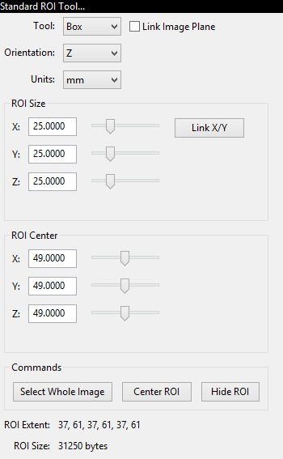
Note
MicroView 2.5.0 features spherical ROI objects as well as the ability to rotate primitives.
MicroView's ROI tool can be used to select a 2D or 3D region of interest in the image for further analysis. It compliments the manual ROI selection technique, using the 7 and 8 keys. Use this tool when a ROI of a specific size or position is needed.
- Activate the ROI tool by selecting
Standard ROIfrom theTools and Applicationssidebar on the left hand side of the main window, or by selectingTools→Standard ROI...from the main menu. - Choose Parallelepiped, Elliptical Cylinder or Spherical ROI shapes for the selected analysis region (Box, Cylinder and Sphere options, respectively).
- Choose a unit of measurement -- either millimeters or pixels.
- Adjust the size and position of the selected analysis region: Either manually enter coordinate values into the appropriate text boxes (hit enter key to accept changes), or adjust the sliders to the right of each entry box to choose the bounds of the region of interest.
- Alternatively, you can resize and reposition a rectangular ROI by
interacting with the faces of the yellow box in the main 3D
viewport. Position the mouse over any surface, then click and drag
the middle mousebutton to resize the ROI along the axis parallel
with the ROI face you clicked upon. Holding the
shiftkey down, while performing the same operation will translate the ROI along the same axis. - Press the
Link X/Ybutton to enable or disable linking size changes in X and Y axis. - Check the
Link Image Planeradio button to enable rotation of ROI primitives. Rotate image planes in order to take advantage of this feature.
Cortical Bone ROI Tool

When applied to a CT image of a bone, this tool can be used to select a ROI corresponding to either the cortical shell or the trabecular space of the bone. The tool uses a series of morphological operators to semi-automatically select cortical bone components. The trabecular space is found within the cortical bone region. Once the cortical bone components have been selected, they can be converted to a ROI for use in the Advanced Bone Application and the image planes can be rotated so that the axes of the planes are aligned with the principal axes of the cortical bone.
Before running this tool, the user needs to either select a ROI to be used for segmentation, or the tool will automatically select the entire image and perform segmentation on the resulting ROI.
Activate the ROI tool by selecting Cortical ROI from the
Tools and Applications sidebar on the left hand side of the main
window, or by selecting Tools → Cortical ROI... from the main menu.
- The gray-level threshold may be either entered manually or determined automatically by using the Auto Threshold button. The result of automatic thresholding is determined using the "Otsu" method
- The "Hole and Channel Size" specifies the largest size, in pixels, of any holes and channels through the bone that you would like the algorithm to fill. The default value is 7 pixels.
- The "Trabecular thickness" specifies the largest size, in pixels, or trabeculae that you would like the algorithm to remove from the ROI. For bones where the cortical thickness is similar to the trabecular thickness, the segmentation algorithm may also eliminate the cortical bone making it less suitable for use in these circumstances. The default value is 7 pixels.
- Use the Run button to segment the cortical bone contained in the ROI.
- Use the
Segmentation→Cortical ROIbutton to convert the segmentation results (highlighted in green) to a ROI (highlighted in yellow) that can be used for analysis operations in the Advanced Bone Application. Select theSegmentation→Trabecular ROIbutton to invert the ROI selection -- i.e. select the trabecular bone region as a ROI. - Use the Align to Principal Axes button to rotate the axis planes to be aligned with the principal axes of the segmented cortical bone
 Isosurface Tool
Isosurface Tool

MicroView's isosurface tool can be used to extract a surface from a 3D
image that corresponds to a user-defined gray-level value. Activate the
tool by selecting Visualize → Isosurface...from the main menu. To
use the tool:
- Select an image threshold value in the
Image Thresholdtext box. - Select a quality factor using the
Surface Quality Factorslider. This factor is used to downsample the image prior, to extracting an isosurface. Use a small value (e.g. 0.25) initially to extract a course surface, then refine the surface by increasing the factor to 1.0. The memory consumed by this plugin increases quickly for large surface quality settings, as does the size of the final surface mesh. Use large values sparingly. - Select a decimation factor by adjusting the appropriate slider. MicroView will attempt to reduce the surface complexity of the final isosurface by this user-defined amount. Setting a value of "0.1" means that MicroView will attempt to reduce the surface polygon count by 10%, while minimizing the impacting on surface topology, surface area and volume contained within the isosurface. A value of "0" indicates that no decimation shall be attempted, while values approaching "1" will significantly impact the quality of the final surface.
- Optionally enable image smoothing and image clipping by checking the appropriate checkboxes. If smoothing is enabled, MicroView will perform a Gaussian blur on the image prior to generating an isosurface. This is used commonly to reduce image noise, and hence remove spurious surface elements from the final surface. This will have an impact on the accuracy of the Area and Volume measurements displayed in the plugin GUI.
- Press the Update button to display/update the isosurface. Press the Clear to hide the surface.
Image Resample Tool
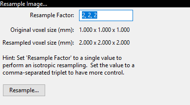
MicroView can perform image downsampling on a loaded image in order to
decrease the disk space and memory needed to store an image. Activate
the downsampling plugin by selecting Process → Resample Image...
from the main menu. Then:
- Enter a downsampling factor in the edit field.
- Press the Resample and Save... button to resample the image and save it to disk.
 Image Transfer Tool
Image Transfer Tool

MicroView can transfer a loaded image to a compatible DICOM viewing station. It can also browse and download into memory images from a number of remote viewing platforms. Certain stations can be automatically detected, while others must be manually configured.
To activate the tool, select Tools → Dicom Transfer... from the main
menu.
- Enter the hostname and port number of the destination server in the appropriate text entry boxes. Optionally select a DICOM application name, for servers that require communication from a specific application name. For servers that do not require a specific application name, leave this field blank.
- Check with your DICOM vendor, or user's manual to determine what the AE title should be. Enter values for Patient Name, Patient ID, Study ID and Study Description, if needed. In some cases MicroView may be able to provide default values based on the image loaded.
- Finally, hit the Send Image button to transfer the image.
 Manage Geometries
Manage Geometries
Note
MicroView 2.5.0 features an overhauled interface for handling point, surface and vector data. General purpose unstructured grids and vector fields can now be displayed in MicroView. Greater control over viewing options have also been added.
This tool is used to display and manipulate 3D surface geometry objects. Surface geometries can be read from a variety of common 3D file formats, such as STL, PLOT3D and PLY formats. Loaded geometries may be superimposed on top of the current 3D image data. Surface characteristics, such as color, opacity, and whether the object is displayed as a closed surface or a wire mesh can be adjusted for each loaded surface. Finally, each surface may be selected and assigned as the default ROI for MicroView. This permits advanced ROI selections to be saved and restored, as well as allowing third-party tools to be used to generate ROI objects.

- Activate the "Manage Geometries..." plugin by selecting
Visualize→Manage Geometries...from the main menu. - Click the Load button to select a geometry file to load in. Multiple files can be loaded sequentially. Each surface object filename will be displayed in the list box above the Load button.
- Click the Show or Hide button to show or hide a selected geometry.
- Click the Delete button to remove a selected geometry from memory.
- Click the
Geometry→ROIbutton to assign the currently selected surface as the default ROI for MicroView. - Customize the color of a selected surface by clicking on the surface's color button, and adjust surface characteristics of the selected surface by checking or unchecking the Display Wireframe button.
- Customize the opacity of the selected surface by adjusting the opacity slider. A value of zero means the surface is completely transparent (e.g. invisible), while a value of 1.0 indicates the surface is completely opaque.
 Image Information
Image Information
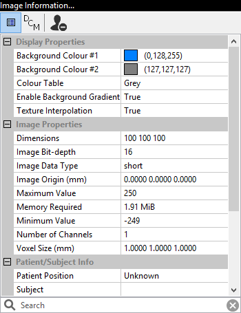
Note
MicroView 2.5.0 has fundamentally changed how image data is represented internally. These changes facilitate converting data between different image formats, while maintaining meta-info in DICOM-compatible format. See the "DCM" page for DICOM-related information.
Overview
This plugin displays properties about the currently loaded image and
general display settings of MicroView, such as background colour, active
units etc. The tool can be activated by selecting
Tools → Image Information... from MicroView's main menu. Image and
system properties can be viewed in one of two basic property display
modes: a general mode presents as much information as possible in
loosely defined categories; a DICOM-specific mode presents DICOM tags
(or equivalents) for the image.
Property Display Modes
To view general image properties and viewing options, select the column-like icon at the top of the plugin. To view instead DICOM tags associated with this image, select the DCM icon. The third icon (a silhouette with minus sign) can be used to anonymize DICOM tags associated with the image.
Property Filters
Image properties can be filtered by adding filter terms in the search box at the bottom of the plugin. Filter words are case insensitive and apply to both property name and property value in both general and DICOM property display modes. You can filter on more than one search string by separating them by spaces.
General Information
Some fields are specific to vff format images, especially those generated by the Locus reconstruction software package: Air and water parameters, for instance, correspond to calibration values entered using the CT calibration tool in MicroView's CT Toolbox plugin. Similarly, the bone parameter value (measured in Hounsfield Units), is also a calibration value, determined as part of the Locus image reconstruction process.
Some image information values (title, subject, air, water and bone values) may be edited by clicking on the value field in the image information box. Press the Enter key to accept the new value, or press the Esc key to cancel your edit session. Editing values in this way does not modify the contents of the original image file on disk -- you must explicitly save the image in order to preserve your changes.
Advanced Region Grow Tool
The Advanced Region Grow tool allows the user to define a ROI in a 2D or 3D image based on the connectedness of voxels with similar intensity values. Once defined, the region grown ROI may be used as MicroView's default ROI for further analysis. The tool extends the capabilities of the Region Grow tool, allowing the early termination of the growth based on a given number of iterations. It also provides the user with a mean of determining the smoothness of the final selected region.
The starting point for using the Advanced Region Grow tool is typically the selection of a simple ROI, to constrain the region growing process. Selecting a small rectangular ROI around the object to be segmented will reduce the memory and time required to perform the region grow operation. Advanced Region Grow can be used without selecting a constraining ROI, but the time and memory required will be greater.
Once a constraining ROI has been selected, the following operations must be performed to use the region grow tool:
- Activate the tool by choosing
Tools→Advanced Region Grow...from the main menu. - Move one of the 3D viewplanes so that it intersects the constraining ROI. Select a plane that clearly shows a slice of the object you wish to segment.
- Temporarily set the Window value for the main window to 1. Adjust the Level value so that the loaded image is displayed in black and white. Choose a setting such that the feature to be segmented is displayed in white.
- Select a threshold option from the available list. If segmenting a bright object from a darker background, select "upper". If segmenting a dark object from a brighter background, select "lower". Choose "window" to segment connected pixels in a range of gray-level values surrounding the current level scrollbar value.
- Choose the number of times Region Grow should occur by providing the "Number of Iterations" parameter in the plug-in. A higher number would result in the final selected region to be larger. This parameter should be changed based on the result obtained. Adjusting this value would allow the user to stop the tool from selecting undesired regions.
- Pick a starting point (e.g. a pick point) for the region grow operation by positioning the mouse cursor over the object of interest within the constraining ROI. Hit the Space key to select the 3D point.
Once a pick point has been selected, the Advanced Region Grow tool will
determine a set of connected voxels. The tool will highlight this
collection of voxels in green in both the 3D and 2D viewports. In the
results section of the region grow tool, the volume and centroid of the
group of voxels will be displayed. Press the View Centroid button to
move the 3D cut-planes so that they intersect at the centroid of the
selected ROI. Press the Geometry → ROI to assign the results of this
tool to the default ROI for further analysis. Once assigned, the green
highlighted voxels will turn yellow, indicating the new choice of
system-wide ROI.
Slab Project
The Slab Project tool accumulates images from a collection of image slices surrounding the currently image planes and displays them using one of a variety of different functions: minimum, maximum, mean and sum. The tool can operate on either on a finite slab of images or the entire collection of data. It can produce oblique, so-called 'Live View' images, or produce a new static image as it's output.
Note
This tool serves as a replacement for the 'MIP Image' tool found in older versions of MicroView.

Using Slab Project
- Activate the Slab Project plugin by selecting
Visualize→Slab Project...from the main menu. - To enable slab projection, choose 'Oblique Live View', 'X-', 'Y-' or 'Z-' axis projections. The first option will produce output in currently selected 3D viewport, while the remaining three options will generate a new output window.
- Select an accumulation function: 'Min', 'Max', 'Mean' or 'Sum'.
- Click the
Applybutton to generate the slab projection. For 'Live View' mode, interacting with the 3D viewport slice position will change the appearance of the slab. - Select
File→Save Snapshot...to save a snapshot of the slab image. Snapshot images are always 8-bit images, and take advantage of the current window/level settings in the slab project window.
 CT Toolbox
CT Toolbox
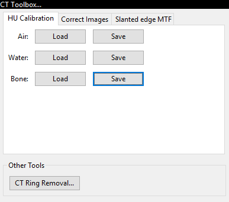
The CT Toolbox plugin consists of a collection of tools, useful for day-to-day analysis of CT image data. The plugin can be used to:
- perform Hounsfield image calibration of GE preclinical scanner data
- perform image unwarp and bright/dark field corrections
- remove rings interactively from a 3D CT dataset
Note
This plugin is designed to supersede the original CT Calibration Tool plugin, found in earlier releases of MicroView.
This plugin allows the user to measure three different ROI's within an image, and save/restore these values. The purpose of saving three sets of ROIs is so that the reconstruction software can automatically determine air, water and bone calibration constants.
- Activate the CT Toolbox plugin by selecting
Tools→CT Toolbox...from the main menu. - Define a ROI with only air by using either the 7/8 keys,or by
selecting a ROI using the ROI plugin
(
Plugins→ROI Selection Tool...on the MicroView menu) and click the corresponding Save button. Similarly do the same for water and bone. - Once the ROI's for air, water, and bone have been selected and the settings have been saved, click one of the Load buttons and the corresponding ROI will appear.
 Make Movie
Make Movie
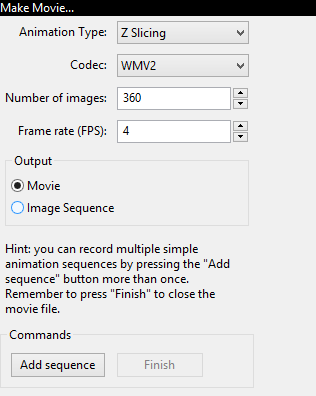
Note
The Movie Maker plugin now uses OpenCV to generate movies in a variety of different output formats. The specific codec list available is platform dependent.
This plugin allows the user to make a movie of a sequence of screen
snapshots, while the loaded image is either rotated 360 degrees about an
axis, or sliced along a cutplane. Sequences can be accumulated together
to build more complex movies. Individual orientations can also be
controlled by using stationary snapshots. Select
Visualize → Make Movie... to load the movie maker.
Next:
- Select the type of animation desired in the Animation Type drop-down menu. The X/Y/Z Rotation entries correspond to animations of the image scene while rotating the image about the selected axis. The X/Y/Z Slicing entries generate an animation of the image scene while slicing through the entire image along the selected image axis.
- Select from one of a number of movie file types.
- Enter the number of snapshot images to take while generating a movie sequence. For rotation-type movies, this number will determine how many degrees to rotate the image scene between each image and the next.
- Press the
Add sequencebutton to start the movie making process. For the first sequence only, you will be prompted to select an output filename. - Additional sequences can be added to the movie by repeating the above steps until the entire movie is produced.
- Finally, close and finish generating the movie by clicking the
Finishbutton.
 Point Picker
Point Picker
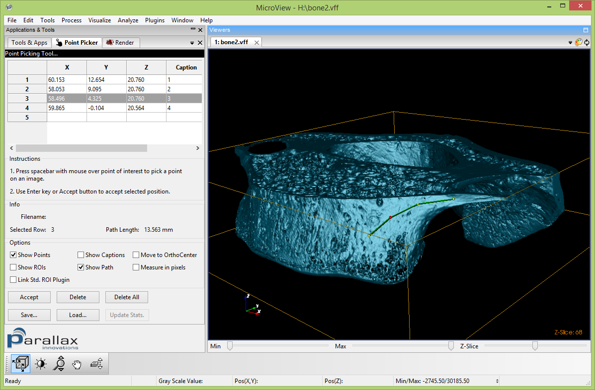
MicroView's point picker tool is used to make a set of landmark
measurements on an image, and to save these measurements to disk. Start
the tool by selecting Plugins → Point Picker... from the main menu.
Once loaded:
- Position the mouse cursor over a point of interest in either 3D or 2D viewports
- Press the Space key to place a marker at the current mouse position
- Press the Accept button, or Enter key, to permanently accept the marker position, or reposition the mouse and hit the Space key again to move the marker
- For each marker, the 3D coordinate will be recorded in the table contained in the measurement tool. Additional column space reserved for adding comments to each line
- Press the
Save...button to save the current marker positions to disk - Captions for each landmark can be optionally displayed floating beside each landmark
- Additional support for the display of a rectangular-shaped ROI about each landmark is available
Interactive Shell
From MicroView's interactive shell, images can be interrogated and manipulated easily. The toplevel python variable images is a list of images, indexed by each loaded images tab
number, which is displayed on each image's Viewer tab.